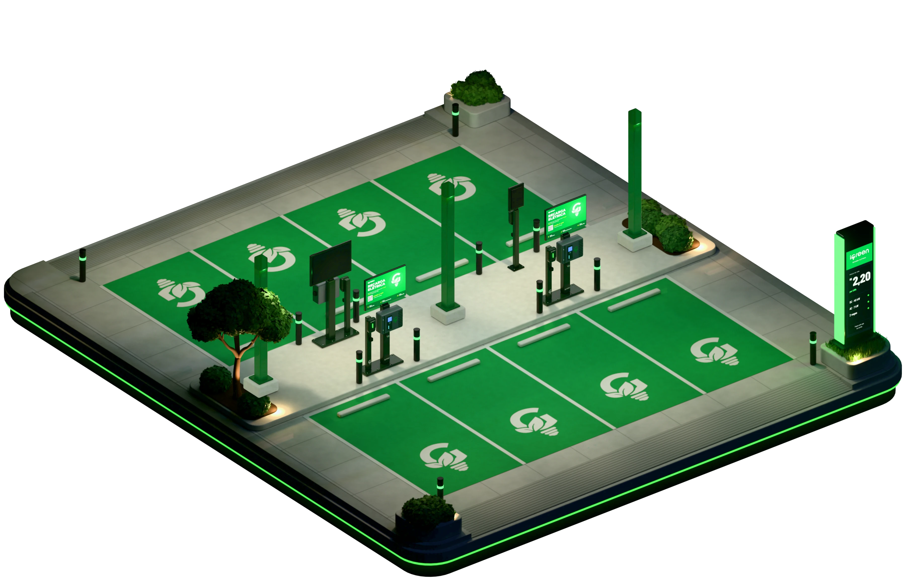

Mob · eletropostosPainel do eletroposto
Versão final · V3O dono acompanha o posto em tempo real, numa maquete 3D ou numa planta vista de cima, e monta o próprio posto num construtor. A maquete de cada formato é montada aqui mesmo no navegador, com peças pré-renderizadas que se encaixam.
Abrir o painel
Para o time de desenvolvimento
Esta pasta é o pacote inteiro: o código, as peças e a documentação para levar o painel ao CRM.
- README · como rodar, as pastas e o painel por código
- ARQUITETURA · as técnicas, os números medidos e o que não pode quebrar
- Código no GitHub · a pasta final/ do repositório
Recomeçar
O que você monta no construtor fica guardado só neste navegador.
Protótipo com dados simulados no formato do carregador (OCPP). Testado no Chrome e no Edge, no computador e no Android; iPhone e Safari ainda não testados.